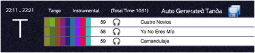
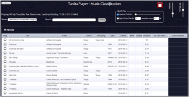
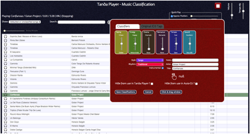
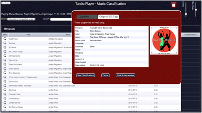
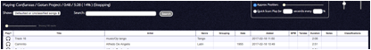

The Tanda Player has been conceived to help the DJ use their music collection without having to remember it in detail.
The classification process is slow and tedious but you only do it once for each song and once done you can then explore your collection or even let the Tanda Player explore it for you – it can put together tandas around songs that are similar according to your own classification system – it is surprisingly good at this and as a result hovering over “Auto Generated Tanda” in the playlist brings up a “Save” button allowing the Tanda to be saved. This is a great way to get lots of Tandas into your collection with very little additional work!

The classification process is controversial and definitely not to everybody’s taste. But it serves another purpose. It makes you really listen to your music.
For an example, some DJs insist that the “Year” of the song is important but ask yourself why? It is not in itself an audible feature and certainly not all songs in one year will sound the same so why use it? The Tanda Player instead offers the ability to really think about the sound – so for example is the main rhythm coming from the Bandoneons or the Violins or a Bass etc. Are there single instruments or many? Are the notes played softly or staccato? Is the music played with lots of energy or drama or is all much softer and mellow?
TIP – try to avoid using classifications that can
overlap. For example if you have a list of styles, then a general “Vals”
may overlap with a more specific one – “Vals-Milonguero”. So try to be consistent and use discriminatory classifications.
Using the Tanda Player to record these more subtle and less obvious musical features it might be possible to actually identify the same songs by the same artist in the same year but without using the Year. One advantage of this is that you can now ask the Tanda Player to find for example energetic music played staccato on violins and find many songs that do indeed sound similar enough for dancers to enjoy when played together in a tanda.
The hard part is identifying what you hear in the music and consistently capturing it.
As a guide, imagine yourself trying to find songs or tandas – is it the mood or a sound you want to find? Are you building energy at the moment or are you trying to calm a busy dance floor down? Once you can imagine trying to query the system you will start to get an idea of what you want to search on. Also remember to include some properties for the purposes of filtering out too! For example, you might want to record the sound quality so that you could at some point remove poor quality tracks and then at another actively go and search for some.
But do not go crazy and have hundreds of properties as this will both make the classification stage of the process very tedious as you fill in lots of details but also mean that fewer songs will share many of these properties and as a result you will also restrict the ability of the Tanda Player to help – especially if your collection is still not that big.
It is strongly recommended therefore that you add just a few songs to the USB stick and define some properties and try to classify consistently with those. If you make mistakes or realize you need more classifiers then you start again before you get too far into a big collection. But if you do get a long way in remember you can always add a new property, which you can add to all new songs, or you can go back and add it to older songs. If you remove a property the values are not removed. So if you bring it back in the classification page the values associated with that property in your songs will also re-appear.

The classification page defaults to showing unclassified songs but can be changed using the drop down list in the top left. In any listing you can add some text to search for to find a particular song.
The Quick Play controls top-right are mainly for adjusting where in a song it plays from when you click it. Setting this to about halfway across means that the song will start playing from about halfway through. This can make identifying whether there is singing or not on a song quicker than listening from the start.
If you click on a song it will start playing – note this is a dangerous application to use if playing Live! Clicking on a song will also bring up the classification controls:

If the song has been previously classified then this will default the controls to the settings required. Otherwise they default to the values set in the configuration page.
Hiding inappropriate songs from the Tanda Player means that they will not be offered in any searches and will not be used by any Auto-DJ features. Hiding from the Auto-DJ will allow them to be found in searches but not by the Auto-DJ.
To set the beats per minute (BPM) simply tap on the hand symbol and continue tapping along to the main danceable beat until the number shown stabilizes around some value.
Note that typically the main beat of Tango is around 60 BPM, Waltzes are usually faster at around 70BPM and Milonga strangely has a strong beat every four beats and so ends up being a quarter of what you might expect at around 40 to 50 BPM. However you may hear the faster beat particularly on some electronic Tango music and so marking these as 120BPM is a good thing because then they will be different to the more traditional tango songs.
Note that the headphone button works but will play from the beginning of the song regardless of where the quick play settings are. However, note too that the sound-card used in the Tanda Player has a powerful output and can drive many types of headphones directly in which case there is no need to use the headphone buttons but simply listen to the real output.
Generally the Tanda Player does not use ID3 tag information (which are the bits of additional information sometimes embedded in audio files). It does use the artist and title because they are pretty standard. Where not available these are replaced by the filename/folder.
However, when classifying from a collection where ID3 tags have been used, a few of the more standard ones have been pulled in for reference use only. They are presented on the main classification screen (genre, grouping, date) and in the classifier pop-up window via the second tab:

This information is read-only and only expected to be used to help you add Tanda Player classifications.
Conversely Tanda Player does not write any ID3 tags back to the files but as the database file is available in JSON format on the USB device, this information can always be re-read using a text-editor.
The date that files are added to the USB is captured too and shown on the classification page. You can click on the header to sort (first click sorts putting the latest at the bottom, so two clicks will put the latest at the top).
The “Date” attribute is the ID3 tag “date”which is seldom present. But the “Added” column is the date the files was added to the USB device.
